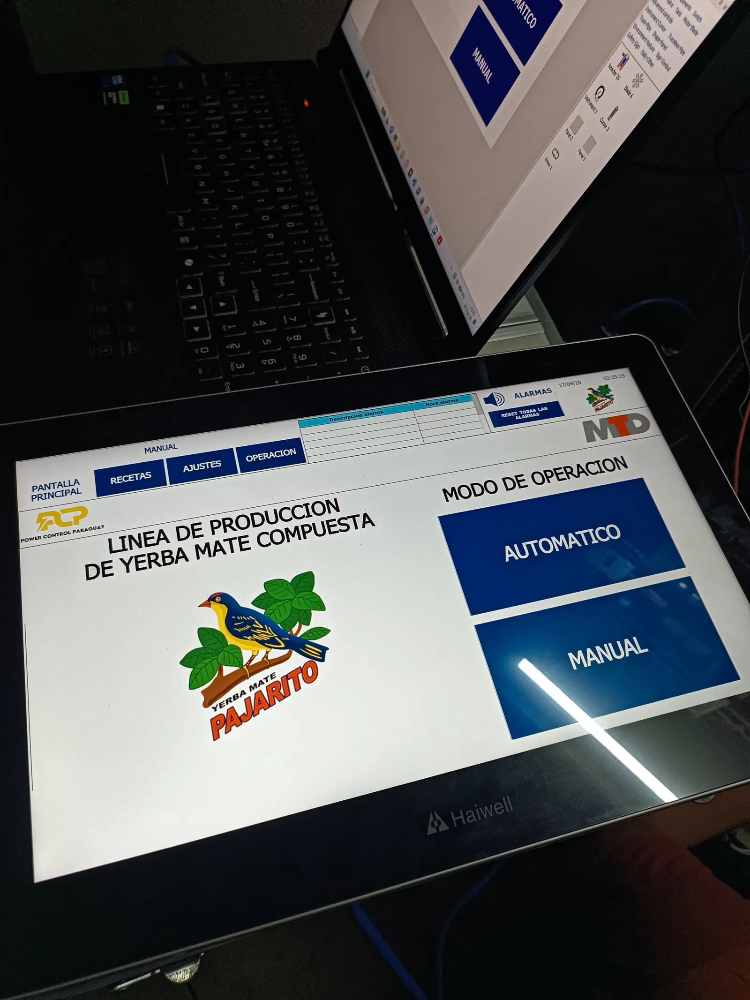
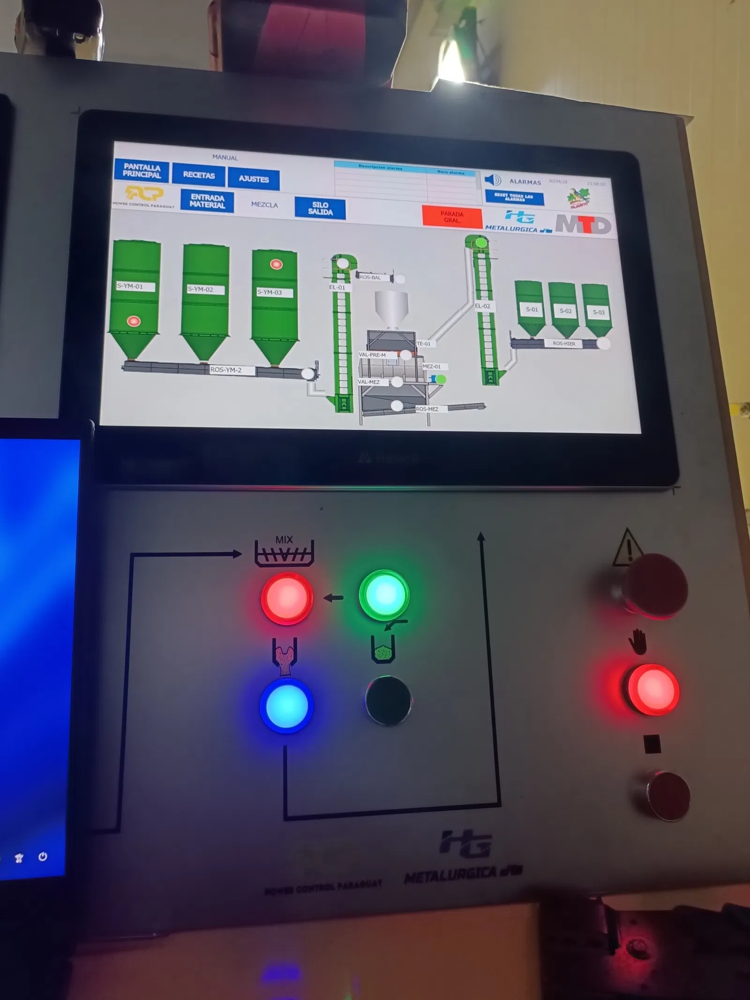
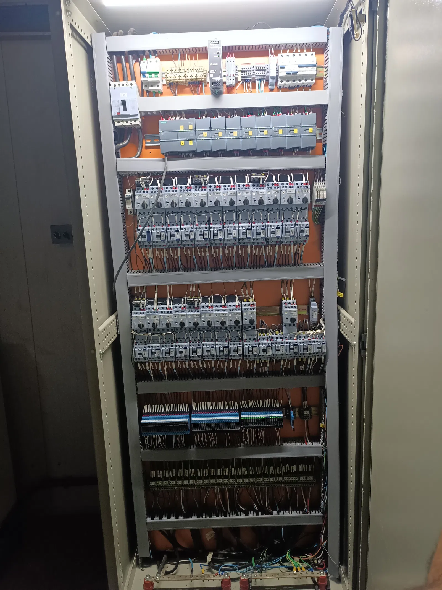

En Yerba Mate Pajarito, Power Control Paraguay participó en la automatización de la línea de yerba mate compuesta, enfocando el trabajo en programación de PLC y HMI, e integración eléctrica del proceso productivo. El objetivo: dosificar con precisión, controlar la mezcla y dirigir el producto hacia envasado con un flujo ordenado y trazable.
Dosificación y control de proceso
El núcleo de la solución fue la integración de balanzas de flujo para medir la yerba durante la producción con mayor exactitud. Sobre esa medición se configuraron los tiempos de mezcla y el comando de equipos de traslado — elevadores, tornillos y tolvas — de modo que el envío al área de envasado sea estable y eficiente.
Segregación automática: mate y tereré
La lógica de control permite separar automáticamente la producción según destino, ya sea para mate o para tereré. Esa segregación ordena el flujo, reduce intervenciones manuales y facilita cambiar de receta o destino sin detener toda la línea.


Integración eléctrica de extremo a extremo
El proyecto se ejecutó en conjunto con otros especialistas: la estructura mecánica fue fabricada por una metalúrgica y el sistema de pesaje por un proveedor especializado. PCP asumió la integración eléctrica completa — tablero de control, programación PLC/HMI, interlocks y puesta en marcha — para que mecánica, pesaje y automatización operen como un solo sistema.
Resultado en planta
- Línea más ordenada, con secuencia clara de ingreso, mezcla y salida
- Dosificación confiable mediante balanzas de flujo
- Flexibilidad para producir según destino (mate / tereré)
- Base lista para escalar la producción según la demanda
¿Querés automatizar una línea de producción en tu planta?
Ver automatización industrial